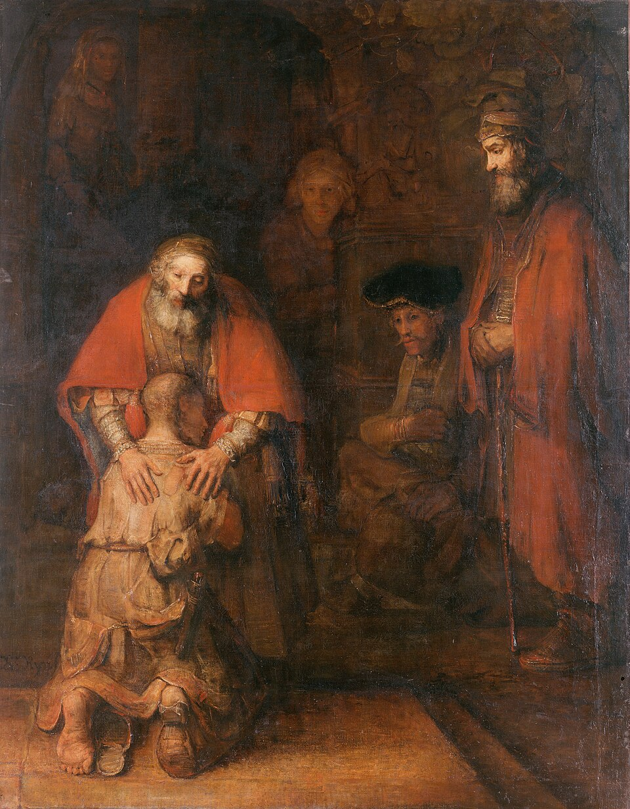
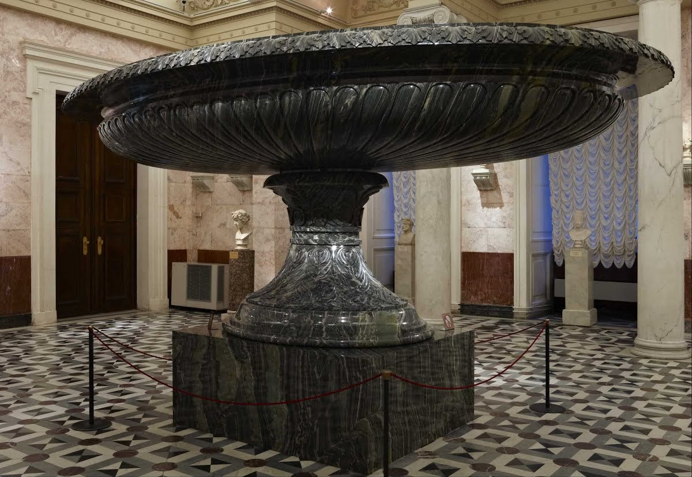

Información General
Ubicación: San Petersburgo, Rusia
Horario: 10:30 - 18:00
Precio: ₽500 (aprox. €5)
Colecciones Destacadas
- El retorno del hijo pródigo
- La habitación roja
- kolyvan vase
Historia y Arquitectura
Fundado por Catalina la Grande en 1764, el Hermitage es uno de los museos más antiguos del mundo. Su palacio barroco, junto al río Nevá, refleja la grandeza del arte y la historia rusa.

Obra: El retorno del hijo pródigo

Obra: La habitación roja

Obra: kolyvan vase